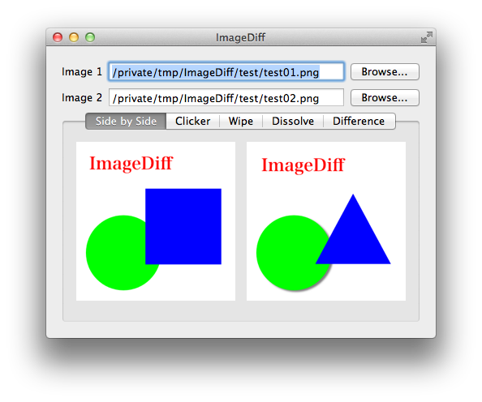
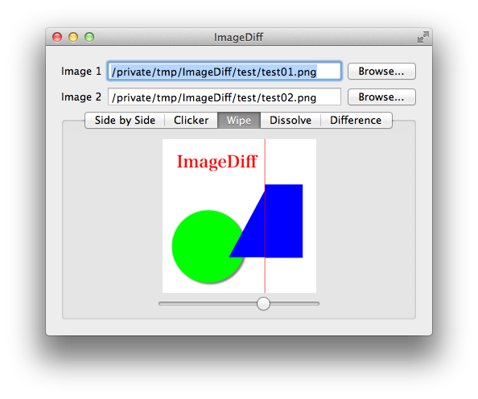

ImageDiff はふたつの画像間の差異をいくつかの方法で表示する Mac OS X 用アプリケーションです。

画像を併置して見比べます
クリックするたびにふたつの画像を切り替えて表示します

ふたつの画像を重ねて配置します。スライダを操作することで上側の画像の表示幅を変更します
ふたつの画像を重ねて配置します。スライダを操作することで上側の画像の透明度を変化させます
ふたつの画像の差画像を表示します